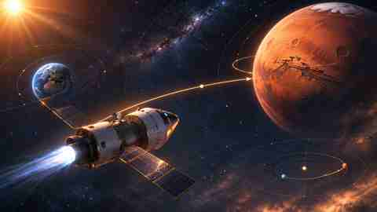

ATLAS SOLARIS / OPOWIEŚCI O PODRÓŻACH / TOM X
ROZDZIAŁ 10 · SZTUKA PODRÓŻOWANIA MIĘDZY PLANETAMI
Jak trafić w planetę,
której jeszcze tam nie ma?
Mars jest widoczny na niebie. Wiemy, gdzie leży. Dlaczego więc statek nie może po prostu obrać kursu na czerwoną kropkę i polecieć prosto przed siebie? Ponieważ kosmos nie czeka na nikogo.
NA MAPIE WSZYSTKO WYGLĄDA PROSTO
Najtrudniejszy cel to ten, który ucieka.
Wyobraź sobie, że stoisz na peronie i chcesz wskoczyć do pociągu. Nie kierujesz się tam, gdzie wagon był minutę temu. Patrzysz, gdzie znajdzie się w chwili spotkania. To zwykła intuicja — lecz w skali Układu Słonecznego staje się jedną z najpiękniejszych zagadek mechaniki nieba.
Ziemia pędzi po orbicie wokół Słońca ze średnią prędkością bliską 30 kilometrów na sekundę. Mars także krąży wokół naszej gwiazdy, ale porusza się po większej orbicie i potrzebuje na pełny obieg około 687 ziemskich dni. Gdy statek opuści Ziemię, obie planety nie przestaną się poruszać. Przeciwnie — każda z nich będzie kontynuowała swój nieustanny taniec.
Dlatego nawigator nie szuka drogi do aktualnego położenia Marsa. Szuka miejsca i chwili spotkania dwóch ruchomych obiektów. Lot kosmiczny jest zadaniem jednocześnie przestrzennym i czasowym.
SŁOŃCE NADAL TRZYMA STER
Statek nie przecina pustki. Zmienia własną orbitę.
Po opuszczeniu bezpośredniego otoczenia Ziemi sonda krąży wokół Słońca. Nie „wyłącza” grawitacji. Jej silniki nadają jej odpowiednią prędkość, a potem przez większość lotu to grawitacja określa zakrzywioną trajektorię. Silnik może pozostać wyłączony przez długie tygodnie; nie oznacza to, że pojazd się zatrzymał.
W idealnym transferze Hohmanna lot z orbity Ziemi do orbity Marsa prowadzi po połowie elipsy. Jej najbliższy Słońcu punkt leży przy orbicie Ziemi, najdalszy — przy orbicie Marsa. Taki transfer minimalizuje sumę impulsowych zmian prędkości dla dwóch współpłaszczyznowych orbit kołowych, gdy rozważamy dwa manewry. Rzeczywiste misje są bardziej złożone.
W chwili startu Mars powinien już znajdować się przed Ziemią w odpowiednim położeniu kątowym. Podczas lotu przesunie się dalej, aby spotkać statek przy końcu łuku transferowego.
INTERAKTYWNA MAPA / UPROSZCZONY MODEL
Ustaw Marsa w chwili startu.
Przesuwaj suwak i zobacz, jak zmienia się położenie Marsa względem przyszłego punktu spotkania. Model zakłada orbity kołowe w jednej płaszczyźnie i idealny transfer Hohmanna.
Przesunięcie planety na rysunku nie symuluje pełnej trajektorii sondy ani sterowania. To wizualna pomoc w zrozumieniu geometrii startu; rzeczywiste daty lotów wymagają efemeryd i obliczeń numerycznych.
JEDNA PLANETA DOGANIA DRUGĄ
Dlaczego nie możemy wyruszyć w dowolny wtorek?
Ziemia obiega Słońce szybciej niż Mars. Z czasem dogania go na orbitalnym torze, a wzajemna konfiguracja obu planet powtarza się mniej więcej co 780 dni. To okres synodyczny, bliski 26 miesiącom.
Nie znaczy to, że poza takim terminem lot jest niemożliwy. Znaczy, że pewne konfiguracje pozwalają odbyć go z dużo korzystniejszym bilansem energii i czasu. Przy dużych statkach, ograniczonym paliwie i konieczności hamowania u celu te różnice mogą przesądzać o wykonalności misji.
Dlatego planowanie rozpoczyna się na długo przed startem. Inżynierowie sprawdzają liczne daty i trajektorie, a następnie szukają kompromisu między czasem lotu, energią startową, masą ładunku i warunkami spotkania.
Rakieta wynosi sondę i wprowadza ją na trajektorię odlotową.
Sonda podróżuje wokół Słońca, wykonując w razie potrzeby korekty.
Kontrolerzy wyznaczają precyzyjną geometrię podejścia do Marsa.
Orbiter hamuje, a lądownik może wejść w atmosferę i rozpocząć zejście.
DWIE DATY, JEDNA BEZBŁĘDNA KONFIGURACJA
Perseverance. Siedem miesięcy między światami.
30 lipca 2020 roku rakieta Atlas V rozpoczęła misję Mars 2020. Na pokładzie znajdował się łazik Perseverance, który miał zbadać krater Jezero. Ziemia i Mars były wtedy ustawione w korzystnym oknie startowym. Po wielomiesięcznej podróży, 18 lutego 2021 roku, statek dotarł do Czerwonej Planety.
Sam przelot nie był prostą kreską łączącą planety. Nawigatorzy prowadzili pojazd po trajektorii heliocentrycznej, uwzględniając coraz dokładniejsze pomiary oraz korekty kursu. Dopiero przy Marsie rozpoczął się finał lotu: wejście w atmosferę, spadochron, system rakietowy i opuszczenie łazika na powierzchnię.
Ta misja pokazuje coś niezwykłego: sukces zależy nie tylko od rakiety, ale od umiejętności przewidzenia przyszłości ruchu całego układu.
2020
2021
NASA/JPL-Caltech · daty rzeczywistej misji Mars 2020. Trasa i czas nie są tożsame z idealnym transferem Hohmanna.
DOBRA NAUKA WIE, CO UPRASZCZA
Za pięknym łukiem kryje się trudniejsza rzeczywistość.
Planety nie poruszają się po idealnych okręgach w jednej płaszczyźnie. Ich rzeczywiste orbity są elipsami o różnych nachyleniach, a pojazd odczuwa wpływ wielu ciał. Start wymaga najpierw ucieczki z ziemskiego pola grawitacyjnego, a dotarcie do Marsa — odpowiedniego manewru przechwycenia lub wejścia w atmosferę.
Dlatego nawigatorzy wykorzystują rzeczywiste efemerydy, modele grawitacji, pomiary radiowe i optymalizację trajektorii. Nasz diagram z suwakiem to model edukacyjny. Pokazuje zasadę, lecz nie dostarcza dat gotowych do prawdziwego lotu.
Jeżeli chcesz zobaczyć szerszą symulację, przejdź do Centrum Misji poniżej. Tam wybierzesz planety, terminy i parametry lotu w zachowanym laboratorium Atlasu.
06 / TERAZ TWOJA KOLEJ
Centrum Misji.
Przejmij stery. Wybierz planetę startową, planetę docelową i warunki podróży. Otwórz istniejący symulator, nie opuszczając tej strony.
Zaplanuj pierwszą misję
Laboratorium zostanie uruchomione dopiero po wybraniu przycisku — dzięki temu artykuł ładuje się szybko także na telewizorach i starszych urządzeniach.
ŹRÓDŁA / DALSZE ODKRYWANIE
Za każdą podróżą stoją liczby.
Okresy, prędkości i kąty podano w przybliżeniu. Grafika otwierająca artykuł jest wizją artystyczną, nie rekonstrukcją rzeczywistego statku ani wyliczoną trajektorią. Schemat transferu ma charakter edukacyjny.